Sunset & Pesisir
Sunset & Pesisir
Matahari Terbenam Tanjung Gelam
Gradasi langit jingga keemasan dengan siluet pohon kelapa miring yang menjadi ciri khas lanskap Karimunjawa.
Potret nyata keindahan surga tropis Laut Jawa. Dari terumbu karang hidup, penyu hijau, gosong pasir timbul, hingga panorama matahari terbenam paling memukau.
Sunset & Pesisir
Gradasi langit jingga keemasan dengan siluet pohon kelapa miring yang menjadi ciri khas lanskap Karimunjawa.
 Bawah Laut & Coral
Bawah Laut & Coral
Keanekaragaman terumbu karang anemon dan ikan badut (Nemo) di zona konservasi Taman Nasional Karimunjawa.
 Pulau Tak Berpenghuni
Pulau Tak Berpenghuni
Hamparan pulau pasir putih yang dikelilingi laguna dangkal berwarna hijau toska dan biru kristal.
 Panorama & Perbukitan
Panorama & Perbukitan
Melihat seluruh bentang gugusan 27 pulau tropis Karimunjawa dari anjungan kayu di atas bukit hijau.
 Dermaga & Pantai Tropis
Dermaga & Pantai Tropis
Dermaga kayu estetik di perairan timur dengan visibilitas air sejernih akuarium raksasa.
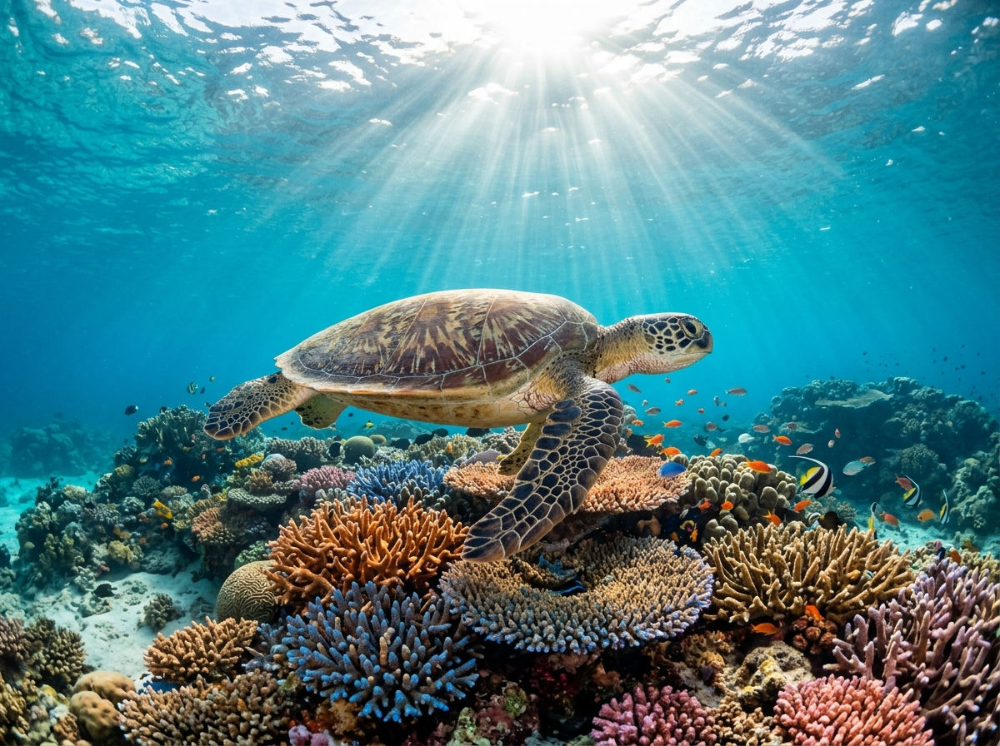
Fauna Laut DilindungiSatwa laut eksotis yang sering dijumpai saat snorkeling di sekitar terumbu karang kepulauan.
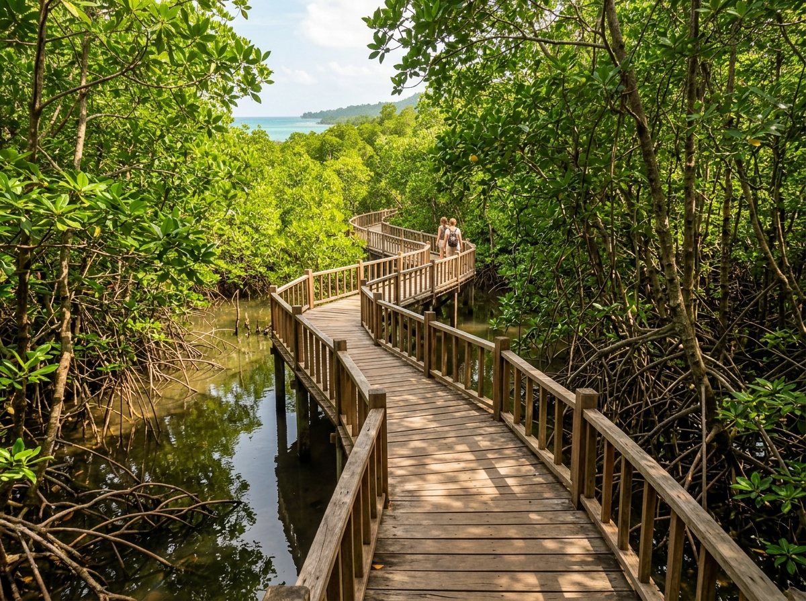
Ekowisata Hutan BakauJembatan kayu sepanjang 2 kilometer membelah hutan bakau alami yang asri dan sejuk.
 Budaya & Island Hopping
Budaya & Island Hopping
Armada perahu kayu tradisional yang menemani setiap penjelajahan pulau dengan nyaman dan aman.
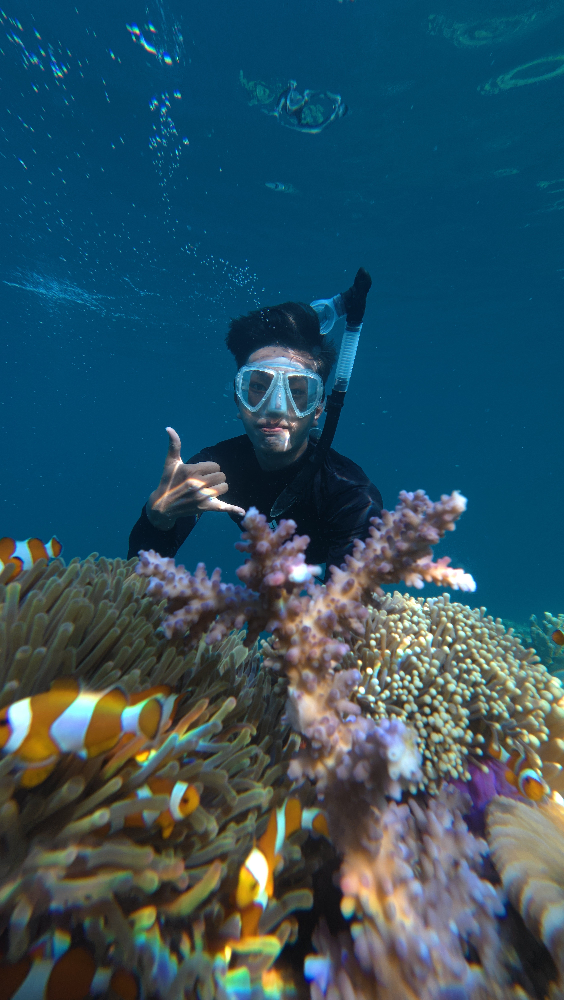
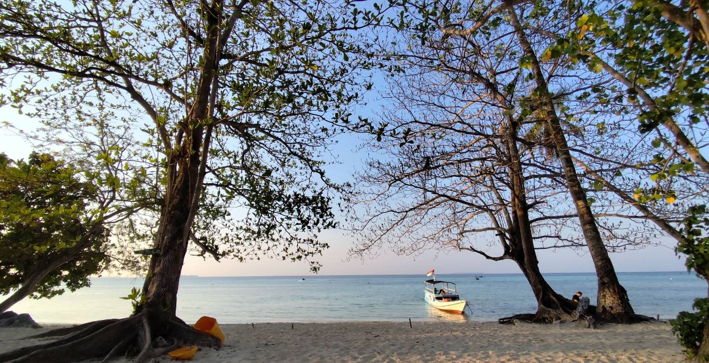
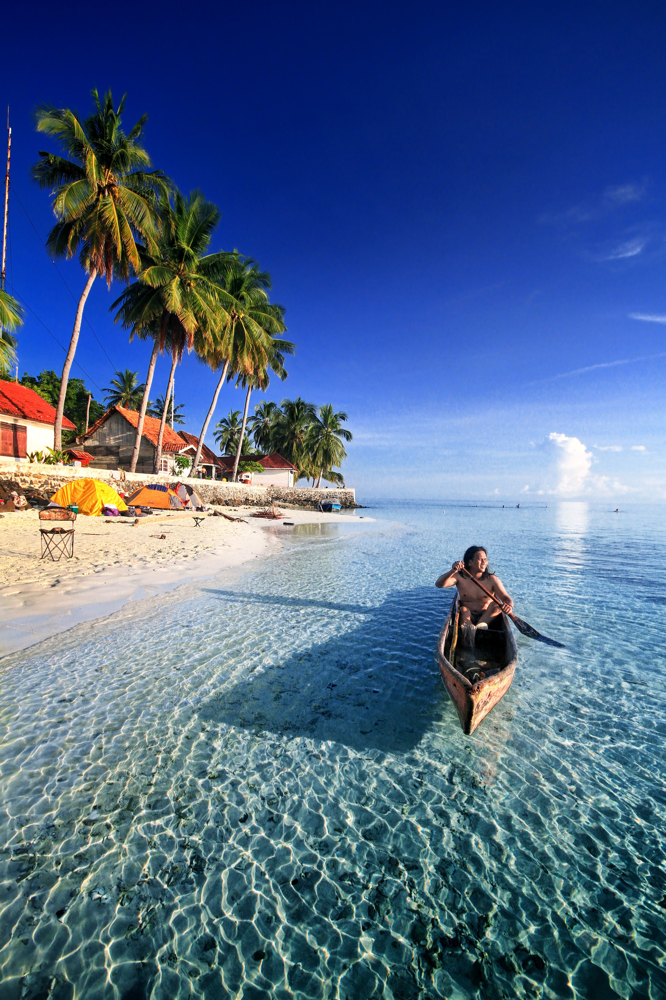
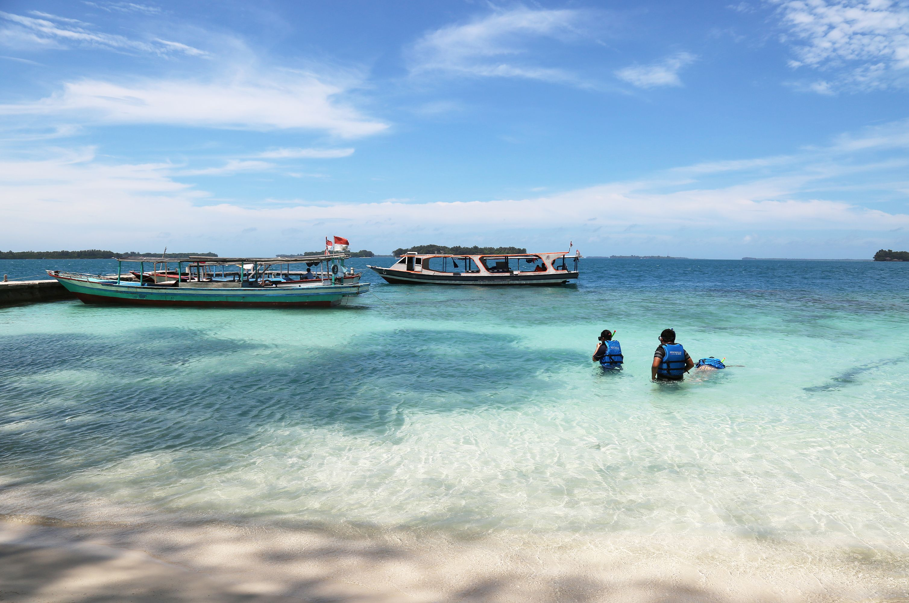
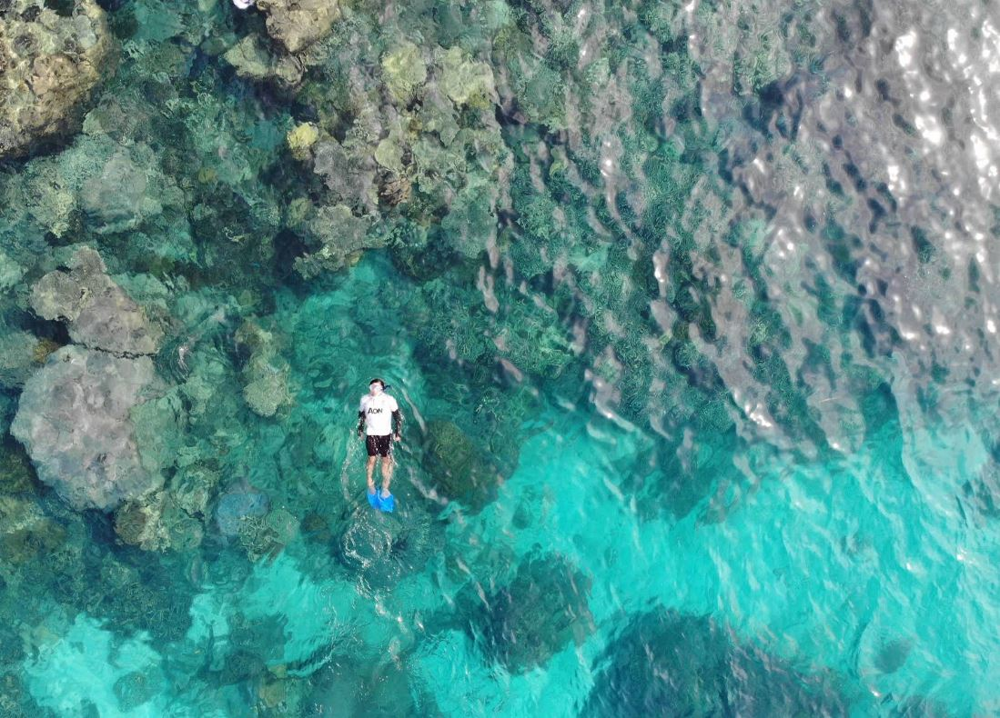
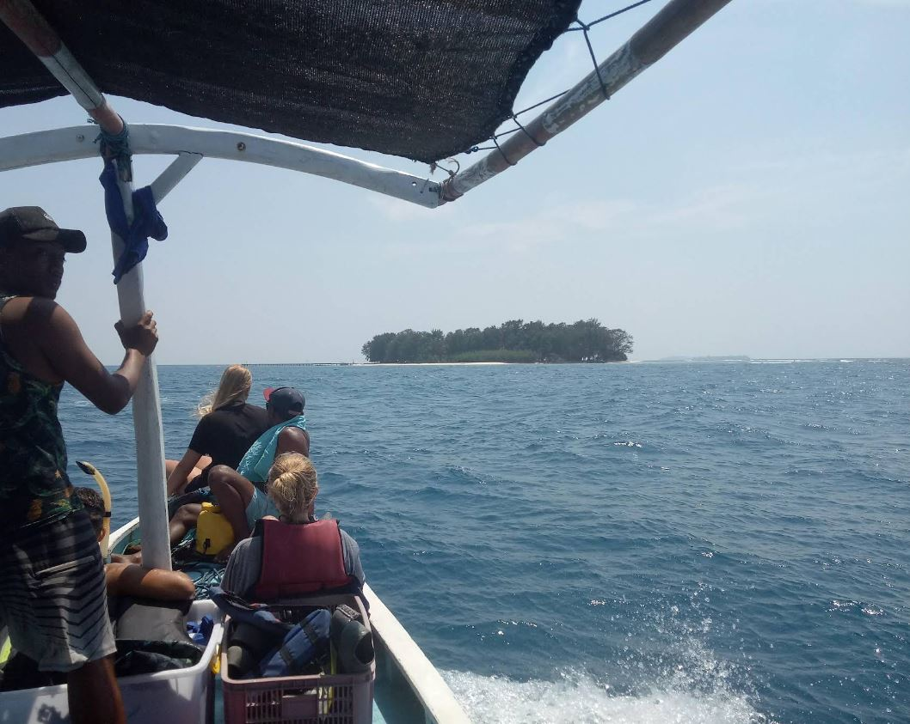
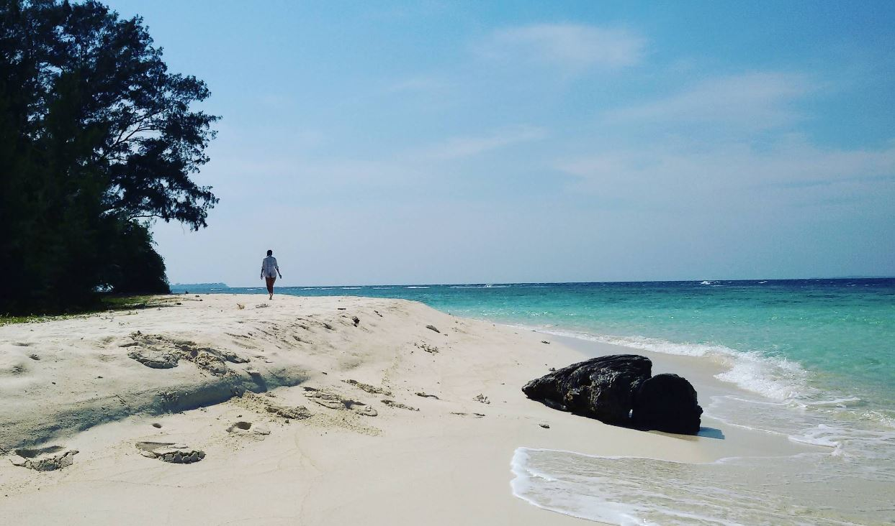
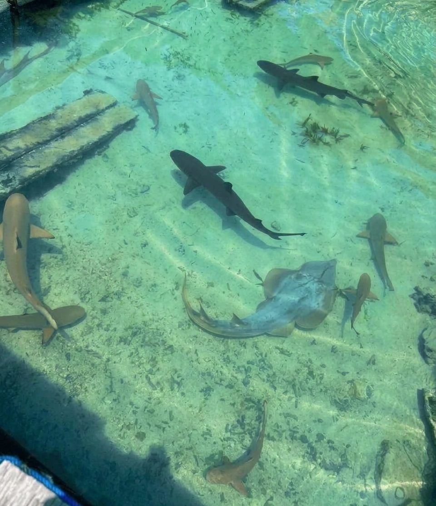
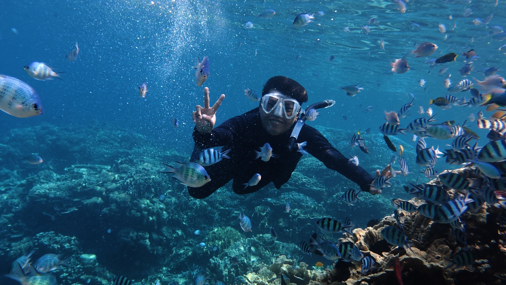
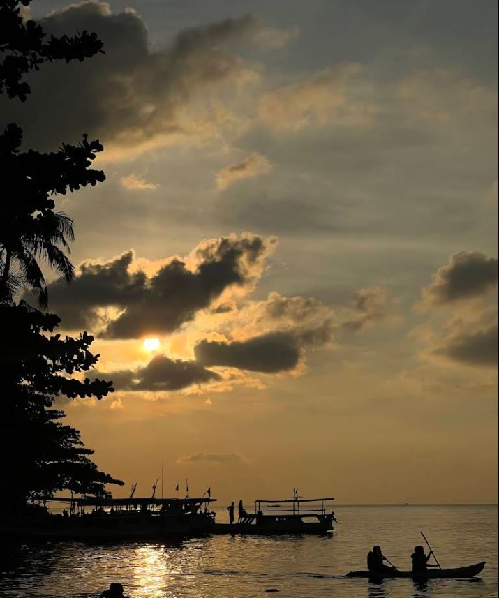
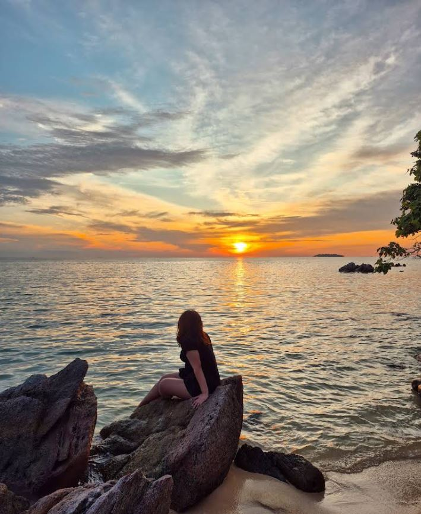
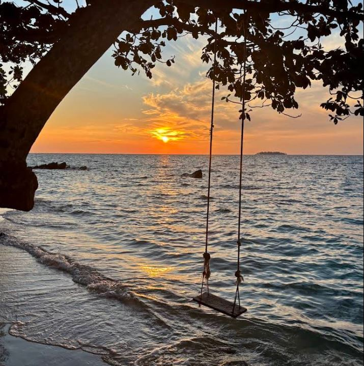
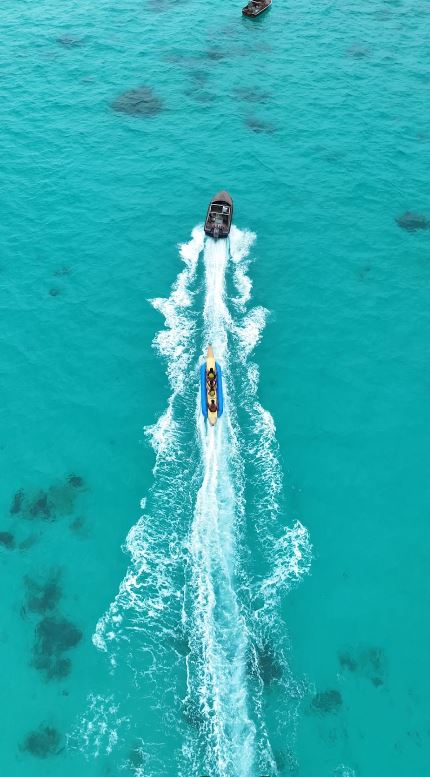
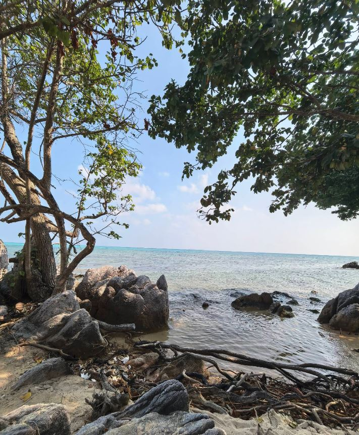